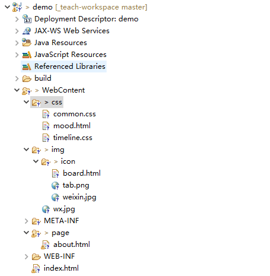

/* 看图说话: 请求图片显示的哪个是C/S架构,哪个是B/S架构 */ result=[]; result[0] = ""; result[1] = ""; result; // 输出结果
// 根据文本框中的提示信息, 填写相关的文件名 result=[]; result[0] = ""; result[1] = ""; result[2] = ""; result[3] = ""; result; // 输出结果
// 根据文本框中的提示信息填写 result=[]; result[0] = ""; result[1] = ""; result[2] = ""; result[3] = ""; result[4] = ""; result[5] = ""; result[6] = ""; result; // 输出结果
// 根据文本框中的提示信息, 填写对应的Tomcat目录名 result=[]; result[0] = ""; result[1] = ""; result[2] = ""; result[3] = ""; result[4] = ""; result[5] = ""; result[6] = ""; result; // 输出结果
// 根据文本框中的提示信息, 填写对应的Tomcat目录名 result=[]; result[0] = ""; result[1] = ""; result[2] = ""; result[3] = ""; result[4] = ""; result[5] = ""; result[6] = ""; result[7] = ""; result[8] = ""; result[9] = ""; result; // 输出结果
// 根据文本框中的提示信息填写 result=[]; result[0] = ""; // 参考网址: http://127.0.0.1:8080/demo/order/index.html?name=john&age=10, 请填写(元素间的分隔符不写): result[1] = ""; result[2] = ""; result[3] = ""; result[4] = ""; result[5] = ""; result[6] = ""; result[7] = ""; result[8] = ""; result[9] = ""; result; // 输出结果
// 根据文本框中的提示信息填写 result=[]; // 参考网址: https://www.hyycinfo.com/index.jsp#nav, 请填写(元素间的分隔符不写): result[0] = ""; result[1] = ""; result[2] = ""; result[3] = ""; result[4] = ""; result[5] = ""; result[6] = ""; result; // 输出结果
/* 这是一段配置文件片段 <Connector port="8888" protocol="HTTP/1.1 " connectionTimeout="20000" redirectPort="8443 " /> */ // 根据文本框中的提示信息填写 result=[]; result[0] = ""; result[1] = ""; result[2] = ""; result[3] = ""; result[4] = ""; result[5] = ""; result; // 输出结果
// 根据文本框中的提示信息填写 // 请问: 在Eclipse 创建的 Web 工程中 result=[]; result[0] = ""; result[1] = ""; result[2] = ""; result[3] = ""; result[4] = ""; result; // 输出结果
/* 这是一段配置文件片段 <welcome-file-list> <welcome-file>index.html</welcome-file> <welcome-file>home.html</welcome-file> <welcome-file>main.html</welcome-file> </welcome-file-list/> */ // 根据文本框中的提示信息填写 result=[]; result[0] = ""; result[1] = ""; result[2] = ""; result[3] = ""; result[4] = ""; result; // 输出结果
/*  看图说话: 有工程截图如上, 请根据要求写出对应的 URL 地址 前置条件: 1. 协议 http 2. 域名 demo.cn 3. 端口 6666 */ result=[]; result[0] = ""; result[1] = ""; result[2] = ""; result[3] = ""; result[4] = ""; result[5] = ""; result[6] = ""; result[7] = ""; result[8] = ""; result; // 输出结果